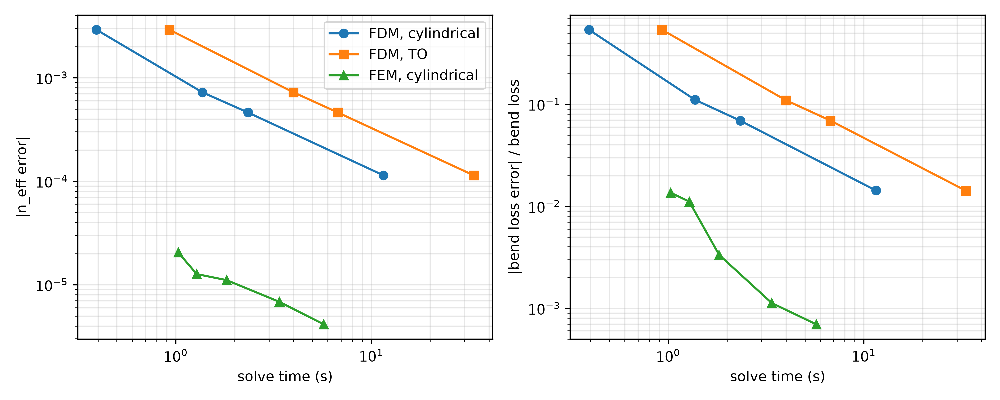
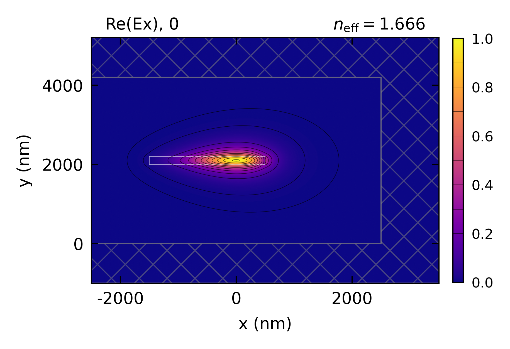

Bend Mode Solvers
The SiN bend of Bending: SiN solved with the bend in cylindrical coordinates
(bend_method='cylindrical', grid coordinate transformation) and by transformation optics
(bend_method='TO', material transformed by the bend’s conformal map), to compare how fast each
converges. The FDM is solved on four grids and the FEM on six fixed meshes
(fem_max_refinements=0), and each solve’s effective index and bend loss are compared against the
finest FEM mesh.
The window and PMLs are optimized by convergence studies run separately. The bend radiates outward, so
PMLs on the outer (east), top and bottom walls absorb the radiated light, and the guided mode’s
imaginary index is its bend loss. The FDM’s PML needs 1 µm, and the FEM chooses its own, twice the PML’s imaginary depth (2.9 µm here).
max_effective_index sits just above the guided mode, so the one mode solved is the guided mode
rather than a PML mode. A fine mesh in the core (the shape’s fem_resolution) lets the FEM resolve
the mode even at 1 point per wavelength, so its first solve uses a 100 nm core mesh and the rest 50 nm.
The bend is symmetric about the core’s horizontal midplane, so boundary_condition='TE' solves
every grid and mesh on half of the window. The FDM gives the same effective index folded as on the
full window. The FEM meshes the half window differently, which lowers its coarsest mesh’s effective
index by 2e-5, still closer to the converged index than any FDM grid.
The FEM is the best method all-around, but it requires EMode3D. Even its fastest solve is closer to the
converged effective index than any FDM solve, so more points per wavelength mainly refine its bend
loss, which converges much faster than the FDM’s. With EMode2D, the FDM in cylindrical coordinates and
the FDM with bend_method='TO' solve the same discretized bend. They give the same effective index on
every grid to every printed digit, and bend losses within 1 % of each other. Both converge at second
order, from an effective index error of 2.9e-3 at 50 nm to 1.1e-4 at 10 nm, and at 10 nm their bend
loss is within 2 % of the FEM’s. The TO solve takes longer on every grid, so the cylindrical
coordinates are the faster choice with the FDM. With the FDM, choose a grid that puts the waveguide’s
edges on grid lines, as every grid here does, or the effective index jumps from one grid spacing to
the next. The FEM meshes the shapes’ edges and needs no such care.
The mode plot is the TO solve on the 10 nm grid, drawn with window_display=True, which outlines
the window and hatches its PMLs.
This code example is licensed under the BSD 3-Clause License.
import sys
import time
import numpy as np
import emodeconnection as emc
from matplotlib import pyplot as plt
## Set simulation parameters: the SiN bend of the 'Bending: SiN' example
wavelength = 980 # [nm] wavelength
w_core = 2000 # [nm] waveguide core width
w_trench = 1500 # [nm] waveguide side trench width
h_core = 200 # [nm] waveguide core height
h_clad = 2000 # [nm] waveguide top and bottom clad, above the PML
window_width = w_core + w_trench*2 # [nm]
window_height = h_core + h_clad*2 # [nm]
bend_radius = 20e3 # [nm] bend radius at the center of the core
x_off = 500 # [nm] core offset, so the bend radius is measured at the core
## The FDM grids all put the core's edges on grid lines (each divides 100 nm),
## and the FEM meshes are fixed (no refinement), from coarse to fine.
resolutions = [50, 25, 20, 10] # [nm]
fem_meshes = [(1, 100), (1, 50), (2, 50), (3, 50), (4, 50), (6, 50)] # FEM (points per wavelength, core mesh [nm])
em = emc.EMode(emode_cmd=sys.argv[1:], simulation_name='bend_solvers')
## Define common settings and the waveguide core
em.settings(
wavelength=wavelength, window_width=window_width, window_height=window_height,
num_modes=1, boundary_condition='TE', background_material='SiO2',
bend_radius=bend_radius + x_off,
pml_NSEW_bool=[1, 1, 1, 0], pml_kappa_max=1, max_effective_index=1.67,
tolerance=1e-6, fem_max_refinements=0, fem_min_angle=33)
em.shape(name='core', material='SiN', width=w_core, height=h_core,
position=[-x_off, window_height/2], fem_resolution=50)
def solve(solver, method, resolution=20, points=4, core_mesh=50):
## The FDM's PML needs 1 um. The FEM chooses its own (pml_thickness 0),
## twice the PML's imaginary depth, 2.9 um here
pml = 0 if solver == 'FEM' else 1000
em.settings(solver=solver, bend_method=method,
x_resolution=resolution, y_resolution=resolution,
fem_points_per_wavelength=points, pml_thickness=[pml, pml, pml, 0])
em.shape(name='core', fem_resolution=core_mesh)
start = time.time()
em.solve()
elapsed = time.time() - start
n_eff = float(np.asarray(em.get('effective_index'))[0])
loss = float(np.asarray(em.get('loss_dB_per_m'))[0])
return n_eff, loss, elapsed
## Run all resolutions and bend methods for FDM
rows = []
for method in ('cylindrical', 'TO'):
for resolution in resolutions:
n_eff, loss, elapsed = solve('FDM', method, resolution=resolution)
rows.append(('FDM', method, f'{resolution} nm', n_eff, loss, elapsed))
## Plot the guided mode of the finest TO grid, with the window and its PMLs
em.plot(component='Ex', window_display=True, file_name='bend_FDM_TO', file_type='png')
## Run all resolutions for FEM
for points, core_mesh in fem_meshes:
n_eff, loss, elapsed = solve('FEM', 'cylindrical', points=points, core_mesh=core_mesh)
rows.append(('FEM', 'cylindrical', f'{points}/wl, {core_mesh} nm', n_eff, loss, elapsed))
## Print each solve's error against the finest FEM mesh
reference = rows[-1][3]
print(f'\n{"solver":7s}{"method":13s}{"mesh":>14s}{"n_eff":>11s}{"error":>10s}{"dB/m":>8s}{"time (s)":>10s}')
for solver, method, mesh, n_eff, loss, elapsed in rows:
print(f'{solver:7s}{method:13s}{mesh:>14s}{n_eff:>11.6f}{n_eff - reference:>10.1e}{loss:>8.4f}{elapsed:>10.1f}')
## Plot effective index and bend loss errors against solve time
loss_reference = rows[-1][4]
fig, axes = plt.subplots(1, 2, figsize=(10, 4))
for solver, method, marker in (('FDM', 'cylindrical', 'o'), ('FDM', 'TO', 's'), ('FEM', 'cylindrical', '^')):
picked = [r for r in rows[:-1] if r[:2] == (solver, method)]
times = [r[5] for r in picked]
axes[0].loglog(times, [abs(r[3] - reference) for r in picked], marker=marker, label=f'{solver}, {method}')
axes[1].loglog(times, [abs(r[4] - loss_reference) / loss_reference for r in picked], marker=marker, label=f'{solver}, {method}')
axes[0].set_ylabel('|n_eff error|')
axes[1].set_ylabel('|bend loss error| / bend loss')
for ax in axes:
ax.set_xlabel('solve time (s)')
ax.grid(True, which='both', alpha=0.3)
axes[0].legend()
fig.tight_layout()
fig.savefig('bend_solvers_convergence.png', dpi=300)
em.close()
Console output:
EMode3D 1.0.7 - email
Meshing completed in 0.0 sec
Solving modes completed in 0.4 sec
Meshing completed in 0.0 sec
Solving modes completed in 1.3 sec
Meshing completed in 0.1 sec
Solving modes completed in 2.2 sec
Meshing completed in 0.2 sec
Solving modes completed in 11.1 sec
Meshing completed in 0.2 sec
Solving modes completed in 0.7 sec
Meshing completed in 0.8 sec
Solving modes completed in 3.1 sec
Meshing completed in 1.2 sec
Solving modes completed in 5.4 sec
Meshing completed in 5.6 sec
Solving modes completed in 27.3 sec
Meshing completed in 0.0 sec
Solving modes completed in 0.6 sec
Meshing completed in 0.0 sec
Solving modes completed in 0.8 sec
Meshing completed in 0.0 sec
Solving modes completed in 1.3 sec
Meshing completed in 0.0 sec
Solving modes completed in 2.8 sec
Meshing completed in 0.0 sec
Solving modes completed in 5.0 sec
Meshing completed in 0.1 sec
Solving modes completed in 9.7 sec
solver method mesh n_eff error dB/m time (s)
FDM cylindrical 50 nm 1.663079 -2.9e-03 0.0252 0.4
FDM cylindrical 25 nm 1.665263 -7.2e-04 0.0182 1.4
FDM cylindrical 20 nm 1.665525 -4.6e-04 0.0175 2.3
FDM cylindrical 10 nm 1.665872 -1.1e-04 0.0166 11.5
FDM TO 50 nm 1.663079 -2.9e-03 0.0252 0.9
FDM TO 25 nm 1.665263 -7.2e-04 0.0182 4.0
FDM TO 20 nm 1.665525 -4.6e-04 0.0175 6.7
FDM TO 10 nm 1.665872 -1.1e-04 0.0166 33.4
FEM cylindrical 1/wl, 100 nm 1.665965 -2.1e-05 0.0166 1.0
FEM cylindrical 1/wl, 50 nm 1.665973 -1.3e-05 0.0166 1.3
FEM cylindrical 2/wl, 50 nm 1.665975 -1.1e-05 0.0164 1.8
FEM cylindrical 3/wl, 50 nm 1.665979 -6.8e-06 0.0164 3.4
FEM cylindrical 4/wl, 50 nm 1.665982 -4.1e-06 0.0164 5.7
FEM cylindrical 6/wl, 50 nm 1.665986 0.0e+00 0.0164 10.9
Exited EMode
Figures:

